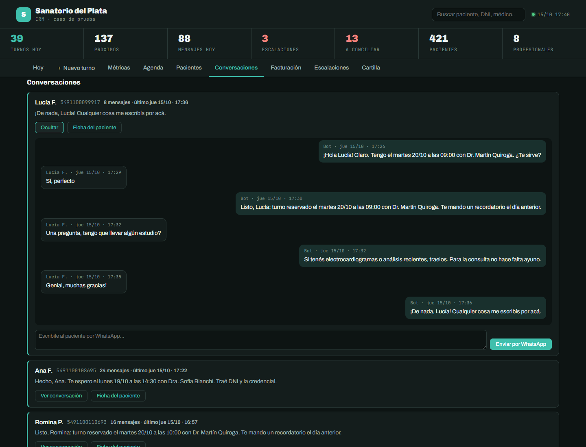

Servicios
Seis servicios, explicados sin jerga
Cada uno resuelve un problema puntual que se puede describir en una frase. Si no sabés cuál necesitás, escribinos y lo vemos juntos: el diagnóstico es la primera fase de cualquier proyecto.
S6 · CALIDAD
Consultoría y control de calidad
Revisamos automatizaciones o agentes de IA que ya tenés — propios o de otro proveedor — para encontrar dónde fallan antes de que lo note un cliente: respuestas incorrectas, huecos de seguridad, procesos que se rompen en silencio.
Este servicio nace directamente de nuestra experiencia como QA profesional: la costumbre de romper un sistema a propósito antes de que lo rompa la realidad.
Quiero una revisiónPARA QUIÉN
Negocios o agencias que ya automatizaron algo pero no confían del todo en que esté bien hecho.
También trabajamos con otras agencias digitales que quieren sumar automatización e IA a lo que ya ofrecen, sin armar el equipo técnico desde cero.
S4 · GESTIÓN
Paneles de gestión y CRM a medida
Una pantalla propia del negocio — no una planilla desordenada — donde el equipo ve todo lo que pasa: turnos del día, pedidos, conversaciones de WhatsApp, métricas de atención, quién resolvió qué.
Con permisos distintos según el rol: el mostrador ve una cosa, la cocina ve otra, el dueño ve las métricas completas.
Quiero ordenar mi gestiónPARA QUIÉN
Cualquier negocio que hoy gestiona todo por WhatsApp personal, planillas sueltas o cuadernos — y que ya no puede saber, de un vistazo, cómo viene el día.

S1 · ATENCIÓN
Agentes de atención por WhatsApp
Un asistente que contesta el WhatsApp del negocio las 24 horas: responde preguntas frecuentes, saca turnos o toma pedidos, y entiende el contexto de la conversación — no repite lo mismo si el cliente ya lo dijo.
Sabe cuándo un tema es demasiado delicado o complejo y tiene que pasarlo a una persona. Eso pasa de forma invisible para el cliente: nunca le dice "te paso con un humano".
Quiero uno para mi negocioPARA QUIÉN
Clínicas y consultorios, restaurantes, comercios con pedidos por WhatsApp. Cualquier negocio que hoy pierde consultas fuera del horario de atención.
LO QUE NOTA TU CLIENTE
Que nunca lo dejan en visto. Que puede reservar o pedir a cualquier hora. Y que si su consulta es rara, igual alguien del negocio se entera y lo llama.
S3 · PROCESOS
Automatización de procesos internos
Conectamos las herramientas que tu negocio ya usa — WhatsApp, Google Sheets, bases de datos, sistemas de pago, calendarios — para que las tareas repetitivas pasen solas, sin que una persona tenga que hacerlas a mano todos los días.
Corre sobre n8n, una herramienta de automatización visual: eso significa que el flujo se puede mirar, entender y modificar después, sin depender de una caja cerrada.
Contame qué tarea te come el díaEJEMPLOS QUE YA CONSTRUIMOS
Recordatorios automáticos de turnos.
Lectura automática de comprobantes de pago con reconocimiento de imagen.
Conciliación de pagos sin intervención manual.
Alertas internas cuando algo falla, para que no se rompa en silencio.
S2 · VENTAS
Calificación automática de clientes potenciales
Cuando alguien escribe interesado en comprar, el sistema no solo lo atiende: mide qué tan cerca está de decidirse, con un puntaje explicado — no un número mágico — y una categoría: frío, tibio o caliente.
Según esa categoría se dispara solo el seguimiento correcto: mensaje inmediato y alerta al equipo si está caliente, información adicional si está tibio, o simplemente queda registrado si recién está mirando — para no cansar a nadie con insistencia.
Quiero ordenar mis consultasPARA QUIÉN
Cualquier negocio con equipo de ventas que hoy pierde tiempo revisando conversaciones una por una para saber a quién llamar primero.
así se ve un puntaje explicado
“Necesito instalarlo antes de fin de mes, ¿me pasás el precio final?”
urgencia alta · encaje confirmado · dudas de precio abiertas
S5 · WEB
Sitios web y landing pages a medida
Páginas de venta y sitios institucionales hechos a mano — no con plantillas genéricas de constructor web. Livianos, rápidos, bien resueltos en el celular.
Y pensados para convertir visitas en consultas: botón de WhatsApp, formularios que funcionan de verdad y una estructura de venta pensada, no solo "linda".
Quiero mi sitioPARA QUIÉN
Negocios que necesitan presencia digital seria sin pagar de más por un sitio pesado y lento.

¿No sabés cuál de los seis necesitás?
Contanos qué pasa hoy en tu negocio. La primera charla es un diagnóstico, no una venta: si lo que necesitás no es algo que hacemos, te lo decimos.
Escribinos por WhatsApp